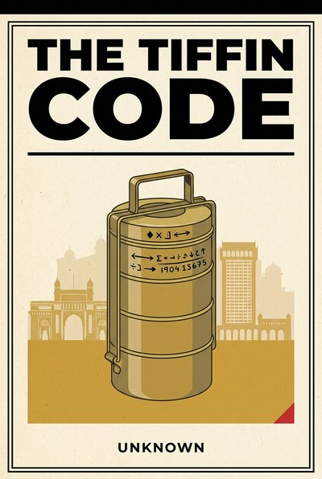

Library › Business & Startups
The Tiffin Code — Summary & Key Lessons

How a transport system with no managers, no software and no meetings delivers at six-sigma accuracy every single day.
📖 OPEN THE FULL INTERACTIVE BREAKDOWN →🌐 Read it in Hindi, Hinglish, Gujarati, Tamil & 22 more languages — free, with audio.
💡 The Big Idea
Two hundred thousand lunchboxes move across Mumbai every working day, sorted by hand, carried on heads and trains, delivered home-to-office-and-back with an error rate that quality engineers travel to study. There is no ERP, no middle management to speak of, and no meetings. There is a code: simple painted marks that any member can read, an ownership structure where the man carrying the box is the man responsible for it, and a rhythm chained to the one immovable thing in the city, the local train timetable. This book converts that system into ten management lessons for any organization that ships anything to anyone: encode the work, error-proof it at the hand, push decisions to the edge, and let the constraint set the clock. The counter-examples are on the public record too, because every lesson here is also a story of what happens when the code is lost.
🧠 The 10 Key Lessons
Lesson 1: Complexity Kills, Codes Save
Chapter 1: The Painted Mark
A dabbawala's sorting mark encodes origin station, pickup neighborhood, destination station and delivery street in a handful of strokes that a new member learns in weeks and a veteran reads at a glance. The code is the system: visible, shared, and simple enough to survive the real world of rain, haste and illiteracy's cousin, complexity fatigue. Organizations bury the same information in systems nobody can read at a glance and then wonder where the errors hide.
📖 Example: Hospitals that cut medication errors did it with checklist codes, not software launches, and aviation's pre-flight flows survive because a stranger can verify a stranger; the dabbawala mark is that principle painted on a tin lid. Read the full example →
⚡ Do this: Take your team's most error-prone handoff and encode it in marks or checklist lines a newcomer could follow unaided. If it takes a paragraph, it is not a code yet.
Lesson 2: Six Sigma Without Software
Chapter 2: The Hand That Checks
The network's legendary accuracy comes from error-proofing at the exact hand that could make the error: one collector, one mark, one line on one train, verified in seconds at each change of custody. There is no after-the-fact audit fixing mistakes downstream because mistakes rarely get downstream. Quality is not a department you add; it is a property you build into the hand.
📖 Example: Toyota built its empire on jidoka, the worker's authority to stop the line, and its darkest public chapter, the recall years, is what the linked case study calls the season it forgot the andon cord; the dabbawalas never had a cord to forget because every hand was always the line. Read the full example →
⚡ Do this: For your top recurring mistake, move the check upstream to the moment of the act: a physical confirmation, a second's pause, a mark that must match before custody changes.
Lesson 3: The Owner Rides the Train
Chapter 3: Skin in the Game
Every dabbawala is a shareholder in his own unit and answers for his own route, which is why the system needs so little supervision. Ownership is not a motivational poster here; it is the compensation structure. The person who could make the mistake is the person who pays for it and profits when it does not happen, and that alignment replaces entire layers of management.
📖 Example: The best-performing franchise and last-mile systems in the world, from courier unit economics to kirana delivery beats, work on the same law: local ownership beats central control wherever the work is physical, local and constant. Read the full example →
⚡ Do this: Pick one decision you currently make for your frontline and hand it over entirely this week, with the data they need and the authority to be wrong.
Lesson 4: One Tiffin, One Touch
Chapter 4: The Minimal Handling Chain
A lunchbox changes custody a handful of times between home and desk, and each change happens at a designed point where the route, not the person, absorbs the effort. The system's genius is subtraction: every unnecessary touch removed is an error opportunity deleted and a minute returned to the day. Logistics is the art of deciding where hands are worth it.
📖 Example: Cross-docking reshaped modern freight by moving goods from inbound to outbound with near-zero storage, and Amazon's earliest warehouse insights were the same: the touch you remove pays you twice, once in cost and once in mistakes. Read the full example →
⚡ Do this: Map every hand your product or work touches from start to finish. Delete one handoff entirely this month, not by hurrying it but by designing it out.
Lesson 5: The 11:20 Is the 11:20
Chapter 5: The Immovable Constraint
The whole network chains itself to the train timetable, and the discipline that looks like a limitation is actually the system's spine: because the train cannot be negotiated with, nothing else is negotiated with either. A hard constraint removes a thousand small decisions and synchronizes hundreds of independent actors without a single meeting. Choose your immovable thing, and let it run the clock.
📖 Example: Broadcasters ship live television to an unforgiving airtime, lean manufacturers level-load to takt time, and the dabbawala who misses the 11:20 does not reschedule the train; he re-plans his whole geography in ninety seconds. Read the full example →
⚡ Do this: Declare one immovable weekly beat for your team (the release, the shipment, the send). Align everything to it for a month and watch the discussions that were never really needed disappear.
Lesson 6: Redundancy Is a Human Network
Chapter 6: The Missing Man
When a dabbawala is absent, his boxes do not wait: the route's structure and the unit's shared code let a neighbor absorb the line for a day. Redundancy here is not idle capacity, it is interchangeable skill plus a common grammar. Most organizations have the opposite: everyone irreplaceable, nothing documented, and a single absence becomes a system event.
📖 Example: Airline crews, military units and surgical teams all run versions of the missing-man method, and the pandemic years were the largest unscheduled audit of it in business history: the teams that survived had codes, not heroes. Read the full example →
⚡ Do this: Write the missing-person protocol for your own role: what a competent colleague would need, in one page, to run your Tuesday. Update it quarterly. That page is your real job description.
Lesson 7: Pay Simple, Keep Everyone
Chapter 7: The Flat Wage Through the Famine
The network's pay is simple and its covenant is stubborn: members are kept through lean months, disputes are settled inside the family, and the incentive to defect is starved by design. Retention is not a program here, it is the water the system swims in, and it is why institutional memory, the real engine of accuracy, survives for generations.
📖 Example: Lincoln Electric's piece-rate culture and paycheck-through-downturn promises produced decades of negligible turnover and legendary skill depth, and every family-run Indian firm that sailed a bad decade with its old hands intact knows exactly why. Read the full example →
⚡ Do this: Write your downturn order of cuts now, before any downturn: what goes first, what goes never. Share it with the team. Certainty about the worst case is a retention tool that costs nothing.
Lesson 8: Grow to the Neighbourhood, Then Copy
Chapter 8: Dense Routes First
The network grew by saturating a neighborhood's collection before touching the next one, because density is what makes a route profitable and a mistake survivable. Expansion followed proof, never preceded it. The temptation to scatter into new territories early is how delivery businesses of every era have quietly bled out.
📖 Example: Uber launched city by saturated city, Zomato and Swiggy conquered zone by zone, and the dabbawalas had mapped the same law a century earlier: one dense, excellent beat beats five thin, apologetic ones. Read the full example →
⚡ Do this: Pick one segment, geography or community you already serve best and deepen it to dominance before opening the next. Write down what 'dominant' measurably means and the date you will permit expansion.
Lesson 9: Tradition That Updates Itself
Chapter 9: The Website on the Wrist
A century-old codewalk adopted SMS bookings, a website and a public rating culture without surrendering the painted mark or the train timetable. The filter was always the same: new tools are welcome when they serve the code, and unwelcome when they replace it. That is not conservatism; it is architecture knowing which wall is load-bearing.
📖 Example: Swiss railways, Japanese konbini and the kirana's WhatsApp order book all modernized around an unchanged core promise, while brands that mistook apps for identity borrowed their own disruption at retail price. Read the full example →
⚡ Do this: List your last three tool adoptions. For each, write which load-bearing routine it served or displaced. Kill one adoption that replaced the core instead of serving it.
Lesson 10: Legacy Is a Rota, Not a Relic
Chapter 10: The Apprentice at the Collecting Point
Sons join fathers on the same routes, new members inherit marks and beats, and authority in the network passes through demonstrated competence at the work itself. Succession is not an event at the top; it is a rota running continuously through the whole body. That is why the system's memory outlives any single carrier, including its most legendary ones.
📖 Example: Every multi-generation institution that survived, from family banks to temple kitchens to the legal partnership model, ran some version of apprentice-before-heir, and the ones that died usually confused inheritance with preparation. Read the full example →
⚡ Do this: Name your apprentice this quarter: the person who gets your hardest task next month with your notes, not your rescue. Promote the rota, not the relic.
✅ 5-Step Action Plan
- Encode your most error-prone handoff in marks or a checklist a stranger could follow.
- Move the quality check to the moment of the act, not the weekly report.
- Hand one frontline decision over entirely this week, with data and authority.
- Declare one immovable weekly beat and align the team to it for a month.
- Write your missing-person protocol (one page) and refresh it quarterly.
⚠️ When This Doesn't Work
This is a TheSmallBook Original, written in-house under the name Unknown. The dabbawala network's public record (its accuracy claims, its studies and its famous six-sigma folklore) varies by source and year, and this book treats the system as a teaching model rather than a certified statistic. Every corporate example cited is real public history; the doctrine drawn from them is the author's own.
💀 The Graveyard Proves It
🚗 Toyota (2009-2011) — The Quality King Who Forgot the Andon Cord. Burn: $1.2B DOJ settlement, ~$2B in recall costs, dozens of deaths attributed. Read the full case study →
💬 Best Quotes from The Tiffin Code
- “Complexity is what a system hides from itself; a code is what it confesses to everyone.”
- “The man who carries the box owns the box, and that is the entire management theory.”
- “Error-proof the hand, not the report.”
Interactive version: mark lessons as read, listen in your language, share quote cards.